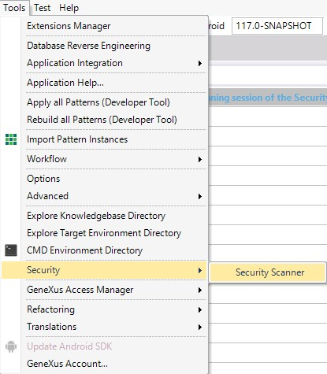
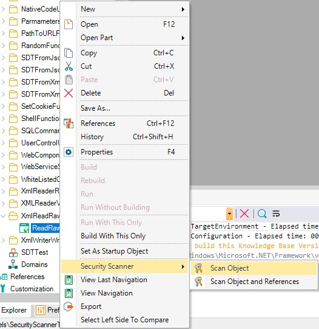
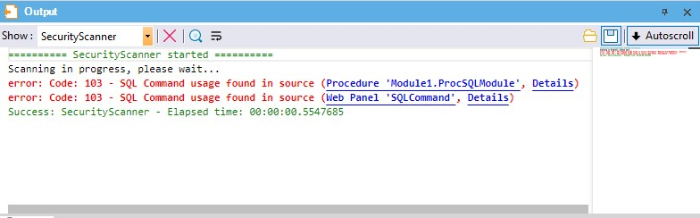
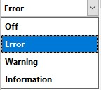
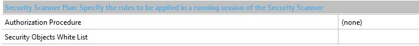
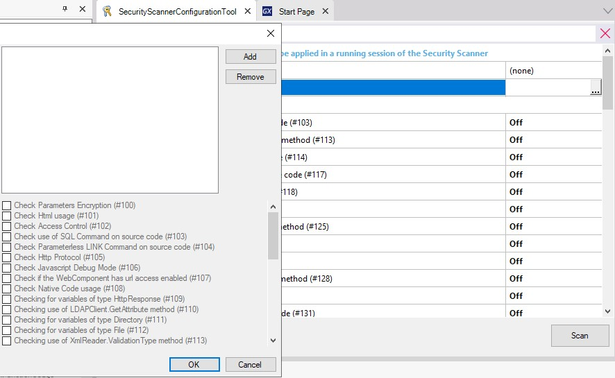
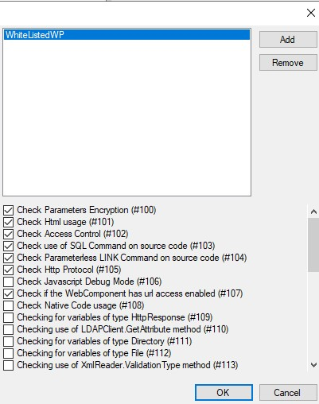
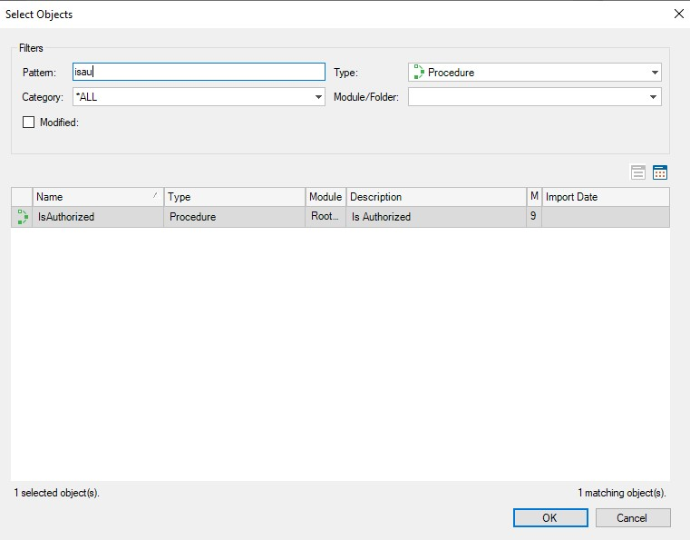

The Security Scanner tool scans/checks objects within a Knowledge Base looking for potential security issues according to OWASP's Top 10 Security Risks.
You can open the Security Scanner Configuration Window by selecting the following options from the GeneXus IDE toolbar: Tools > Security > Security Scanner

or apply it to a particular object or a subset of them using the "Security Scanner" Contextual Menu:

The Environment rules will be applied only when a full scan is triggered. When a partial scan is executed (using the Contextual Menu) the Environment rules will not be applied.
The tool will scan the following types of objects:
The tool will not scan the following types of objects:
When the scan is performed using the IDE the result will be shown on a new Output Section called Security Scanner.

For every rule, you can configure its level of severity or disable it in the Configuration Window.

Security Scanner analyzes objects to check if their parameters are encrypted; that is, if their Encrypt URL parameters property is set to "Session key" or "Site key."
If a <Parameter encryption> issue is found, Security Scanner will show the following message:
error 100: Parameters encryption is not set
Security Scanner analyzes attributes, variables, and textblocks checking if their Format property for Web has been set to "HTML" or "Raw HTML."
If an <HTML format> issue is found, Security Scanner will show a message like this:
error 101: HTML Textblock detected in WebForm (Name 'htmltxtblock' Type 'HTML'. Name 'rawhtmltxtblock' Type 'Raw HTML'. )
Security Scanner analyzes Web Panels and Transactions in the KB checking if they call an Authorization program (procedure). This rule does not apply to Master Pages and Web Components.
If an <Authorization> issue is found, Security Scanner will show a message like this:
error 102: No access control configured for this object
When using Xev2, the Integrated Security Level property is checked (GeneXus Access Manager usage).
Security Scanner analyzes KB objects looking for SQL commands.
If a <SQL Command> issue is found, Security Scanner will show a message like this:
error 103: SQL Command usage found in source
i.e.: SQL UPDATE UserInfo SET UserWelcomeMessage='[!&UserWelcomeMessage!]' WHERE UserId=[!&UserId!]
Security Scanner analyzes KB objects to check if there is a dynamic command link without parameters.
If a <Link command> issue is found, Security Scanner will show a message like this:
error 104: Parameterless LINK command usage found in source
i.e.: Link(&SomeWebPanel)
Security Scanner analyzes Web Panels and Procedures checking if HTTPS protocol has been specified. This means checking if the Protocol specification property has been set to “Secure (HTTPS).”
In the case of a SOAP Procedure, it will inherit the protocol specification from the environment so it will trigger the rule when an insecure protocol specification is configured on the environment. This apply since GeneXus 17 upgrade 4.
If an <Http protocol> issue is found, Security Scanner will show a message like this:
error 105: HTTP protocol is not Secure
Security Scanner analyzes the Javascript debug mode property at generator level; when enabled, the following message will be displayed:
error 106: Javascript Debug Mode is enabled
Security Scanner analyzes KB objects set as Web Components checking if URL Access for them has been enabled. This means checking if the URL Access property has been set to “Yes.”
If a <WC URL Access> issue is found, Security Scanner will show a message like this:
error 107: Web Component with URL Access enabled
Security Scanner analyzes KB objects' source section checking for the Java or C-Sharp command.
The following message is displayed:
error 108: Native Code usage found in source
Security Scanner analyzes KB objects' variables section checking for HttpResponse data type usage.
The following message is displayed:
error 109: HttpResponse Data Type usage in variables (Name 'HttpResponse' Type 'HttpResponse'. )
Security Scanner analyzes KB objects' source section checking for LDAPClient Data Type GetAttribute method usage.
The following message is displayed:
error 110: LDAPClient.GetAttribute() pattern detected in source
Security Scanner analyzes KB objects' variables section checking for Directory data type usage.
The following message is displayed:
error 111: Directory Data Type usage in variables (Name 'Directory' Type 'Directory'. )
Security Scanner analyzes KB objects' variables section checking for File data type usage.
The following message is displayed:
error 112: File Data Type usage in variables (Name 'File' Type 'File'. )
Security Scanner analyzes KB objects' source section checking for XMLReader Data Type ValidationType property usage.
The following message is displayed:
error 113: XmlReader Validation type property misconfiguration
Security Scanner analyzes KB objects' source section checking for Shell function usage.
The following message is displayed:
error 114: Shell function usage found in source
Security Scanner analyzes KB objects' source section checking for Random function usage.
The following message is displayed:
error 115: Random function usage found in source
Security Scanner analyzes KB objects' source section checking for SetCookie function usage.
The following message is displayed:
error 116: SetCookie function usage found in source
Whenever possible, use the Cookie data type and enable the HttpOnly property.
Security Scanner analyzes the source section of WebPanels and Transactions checking for Form.HeaderRawHTML property usage.
The following message is displayed:
error 117: HeaderRawHTML method usage found in source
Security Scanner analyzes the source section of WebPanels and Transactions checking for Form.JScriptSrc property usage.
The following message is displayed:
error 118: JScriptSrc method usage found in source
Security Scanner analyzes the source section of WebPanels and Transactions checking for IsPassword property usage.
The following message is displayed:
error 119: IsPassword Property enabled in WebForm
Security Scanner analyzes KB objects' source section checking for External object usage.
The following message is displayed:
error 120: External Object usage in variablesName 'CustomType' Type 'CustomType'.
For Xev2; GAM and GXflow External Objects are excluded.
Security Scanner analyzes the WebForm section of WebPanels and Transactions for User Controls usage.
The following message is displayed:
error 121: UserControl detected in WebForm Name 'CustomControl' Type 'CustomControl'.
Security Scanner analyzes KB objects' variables section checking for Cookie data type usage.
The following message is displayed:
error 124: Cookie Data Type usage in variables (Name 'Cookie' Type 'cookie'. )
Whenever possible, enable the HttpOnly property.
Security Scanner analyzes KB objects' source section checking for the XMLWriter WriteRawText method usage.
The following message is displayed:
error 125: XmlWriter.WriteRawText() pattern detected in source
Security Scanner analyzes KB objects' source section checking for the FromXml method usage.
The following message is displayed:
error 126: SDT.FromXml() pattern detected in source
Security Scanner analyzes KB objects' source section checking for the Business Component FromJson method usage.
The following message is displayed:
error 127: SDT.FromJson() pattern detected in source
Security Scanner analyzes KB objects' source section checking for the XMLReader Data Type's ReadRawXML Method usage.
The following message is displayed:
error 128: XmlReader.ReadRawXML() pattern detected in source
Security Scanner analyzes KB objects' variables section checking for Blob data type usage.
The following message is displayed:
error 129: Blob usage detected in object (Variable: blob)
Security Scanner analyzes KB objects' source section checking for the JSEvent Method usage.
The following message is displayed:
error 130: JSEvent usage found in source
Security Scanner analyzes KB objects' source section checking for the SoapHeaderRaw nonstandard function usage.
The following message is displayed:
error 131: soapHeaderRaw usage found in source
Security Scanner analyzes KB objects' source section checking for the PathToURL function usage.
The following message is displayed:
error 132: PathtoUrl usage found in source
Security Scanner analyzes KB objects' source section checking for the XMLReader Data Type ReadExternalEntities Property usage.
The following message is displayed:
error 133: XmlReader ReadExternalEntities pattern detected in source
Security Scanner analyzes KB objects' source section checking for the FromXmlFile method usage.
The following message is displayed:
error 134: SDT.FromXmlFile() pattern detected in source
Security Scanner analyzes KB objects' source section checking for the FromJsonFile method usage.
The following message is displayed:
error 135: SDT.FromJsonFile() pattern detected in source
Security Scanner analyzes the KB Environment to check if its parameters are encrypted; that is, if its Encrypt URL parameters property is set to "Session key" or "Site key."
If a <Parameter encryption> issue is found, Security Scanner will show the following message:
error #136: Parameters encryption is not set (Environment)
Security Scanner analyzes the KB Environment checking if HTTPS protocol has been specified. This means checking if the Protocol specification property has been set to “Secure (HTTPS).”
If an <Http protocol> issue is found, Security Scanner will show a message like this:
error #137: Http protocol is not Secure

Using this field, you can select objects and rules to be whitelisted on the analysis.


If you are not using GAM, this field allows you to insert a Procedure or Master Page that contains the authorization logic. The scan will signal with an error the objects that do not contain the call for the authentication Procedure or use the Master Page selected.

If you put some other type of object (not Master Page and not Procedure) the scan will ignore this configuration.
Define a new Task called Scan that allows you to run the scanner in an MSBuild script. This task can be included in any server-side pipeline of CI/CD.
This task will execute the configuration previously set through the Security Scanner Configuration Window.
<Project DefaultTargets="SecurityScan" xmlns="http://schemas.microsoft.com/developer/msbuild/2003">
<Import Project="$(GXInstall)\genexus.tasks.targets"/>
<Import Project="$(GXInstall)\security.tasks.targets"/>
<Target Name="SecurityScan">
<OpenKnowledgeBase Directory="$(KBDir)" />
<SecurityScan XmlOutputFile="securityTest.xml"/>
</Target>
</Project>
By specifying the XmlOutputFile you get Errors and Warnings in XML format.
msbuild securityscantest.msbuild /verbosity:minimal /t:SecurityScan /p:KBDir=c:\mykbpath /p:GXInstall=c:\genexusinstalldir
This tool is available since GeneXus 17 upgrade 3.